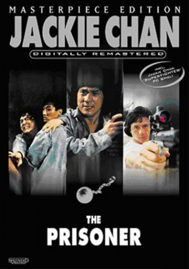
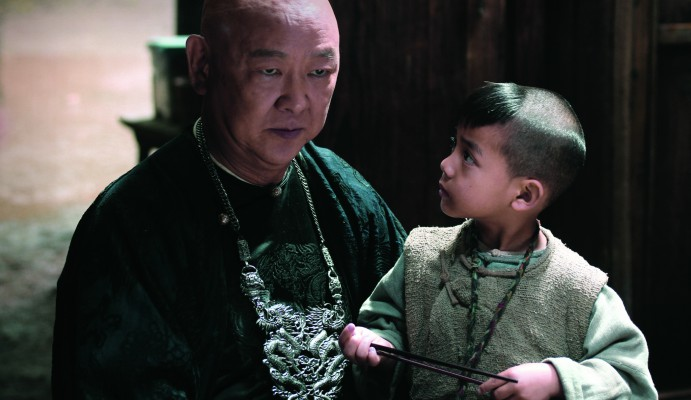

#7167 The Prisoner
 
 IMDB-Wertung: 5.9 / 10
IMDB-Wertung: 5.9 / 10  Metascore: 0
Metascore: 0 
Vier junge Männer, die aus unterschiedlichsten Gründen in einem chinesischen Gefängnis einsitzen, werden durch verschiedene Auseinandersetzungen mit anderen Gefangenen und der korrupten Gefängnisleitung in freundschaftlicher Verbundenheit zusammengeschweißt. Als besonders clevere, aber ebenso unangepaßte Sträflinge werden sie von Beamten zu einem Himmelfahrtskommando gezwungen ...
Jahr: 1990
Dauer: 96 Minuten
FSK: 18
Land: Taiwan Studio: Koch MediaTonspuren:
Untertitel: Deutsch,
Auflösung: 1080p (1920x1040) Größe: 6717 MB
Genre: Action, Drama, Krimi
Regisseur: Yen-Ping Chu
Drehbuch: Jakob Lass
Soundtrack:
Darsteller:
 Jackie Chan als Lung / Steve Tong
Jackie Chan als Lung / Steve Tong Andy Lau als Lau / Boss Lee
Andy Lau als Lau / Boss Lee Sammo Kam-Bo Hung als Fatty Liu Hsi Chia / John Liu
Sammo Kam-Bo Hung als Fatty Liu Hsi Chia / John Liu Tony Ka Fai Leung als Wei Wang / Andy Lau
Tony Ka Fai Leung als Wei Wang / Andy Lau-  Yu Wang als Kui / Lucas
- Chun Hsiung Ko als Prison Chief / Prison Superintendent
- Chung-Hua Tou als Chiu / Charlie
- Barry Wong als Inspector Wong
 Jack Kao als Ho
Jack Kao als Ho- Kuo-Chu Chang als Miao-sheng / Seng
- Rachel Chang als Woman in the rain
- Ming Kao als
- Pao-Ming Ku als
- Min-Jan Ni als
- Lai Wang als
 Jessica Gee-George als Wei's Girlfriend , uncredited
Jessica Gee-George als Wei's Girlfriend , uncredited- Subas Herrero als Police , uncredited
- Chuan-Chen Yeh als Fong
- Wang An als
- Chung-Kuei Chang als
- Jui-chu Chang als
- Sha Chao als
- Wen Ho Chen als
- Yen-Ru Chen als
- Yu-Jing Chen als
- Chi Chi als
- Hao Chin als
- Wan Hsi Chin als
- Yung-Chang Chin als
- Ben Ko Chu als
- Jing Fang als
- Kang Ho als
- Wei-Hsiung Ho als
- Yan Hsiao als
- Chang-Wen Hsieh als
- Hai-Ling Hsiung als
- Cheng-Yi Hsu als
- Tou Hu als
- Cheng-Lin Huang als
- Ching-Lin Huang als
- Chin-cheng Lai als
- Rocky Lai als Iron Ball's Thug / Prisoner
- Chang An Li als
- Wen-Tu Li als
- Kuang-Chun Lin als
 Ken Lo als Bodyguard
Ken Lo als Bodyguard- Yuan Meng als
- Ting-Ken Shih als
- Meng-Chiu Tieh als
- Chien Tsao als
Datei: X:\HD-Eastern-Collections\Jackie Chan\Prisoner, The (1990, FSK18, 1920x1040).mkv seit 02.10.2017
Festplatte: HD Eastern+Western
 Es gibt insgesamt 58 Filme in der Gruppe 'HD-Eastern-Collections\Jackie Chan'
Es gibt insgesamt 58 Filme in der Gruppe 'HD-Eastern-Collections\Jackie Chan'